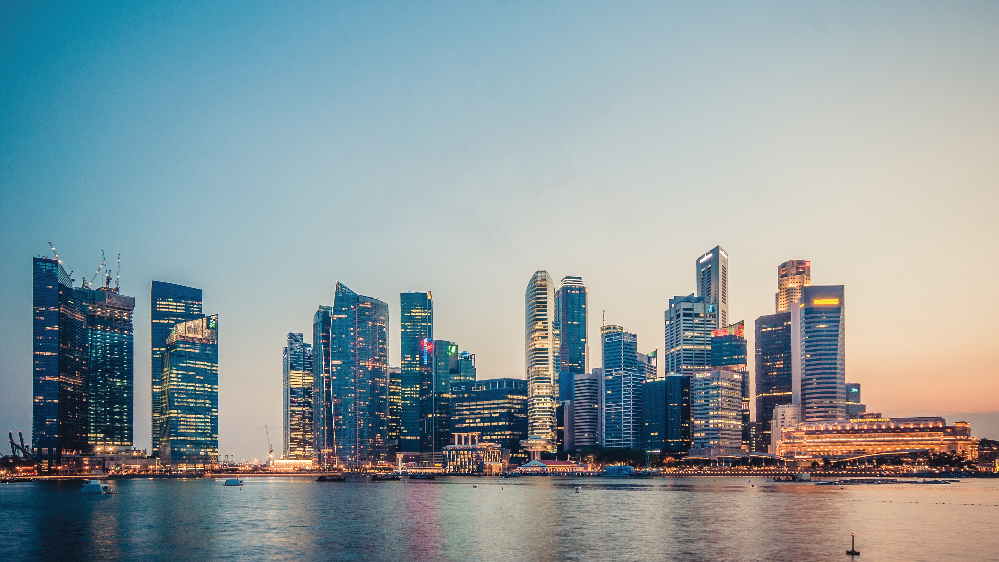
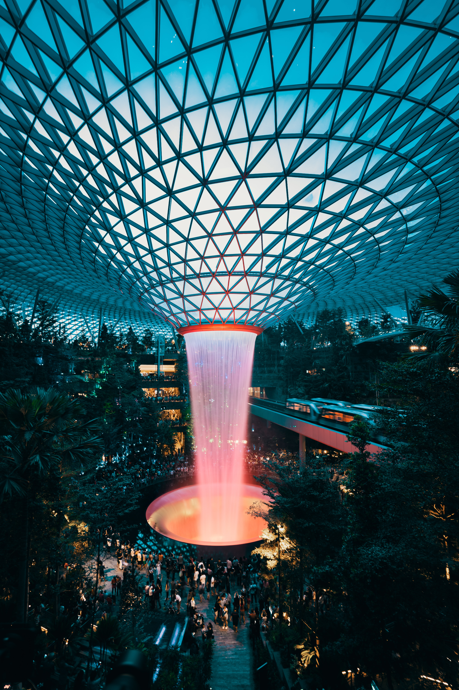
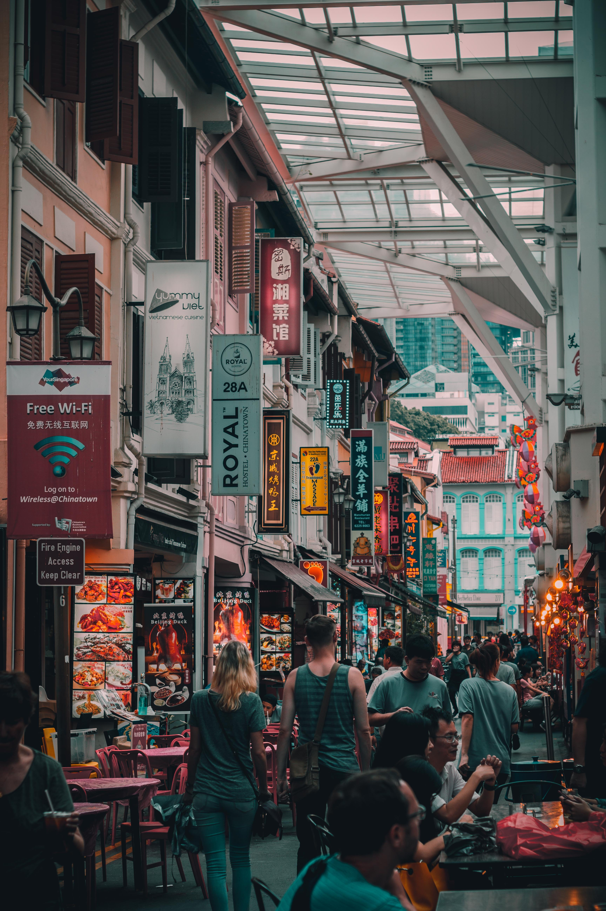
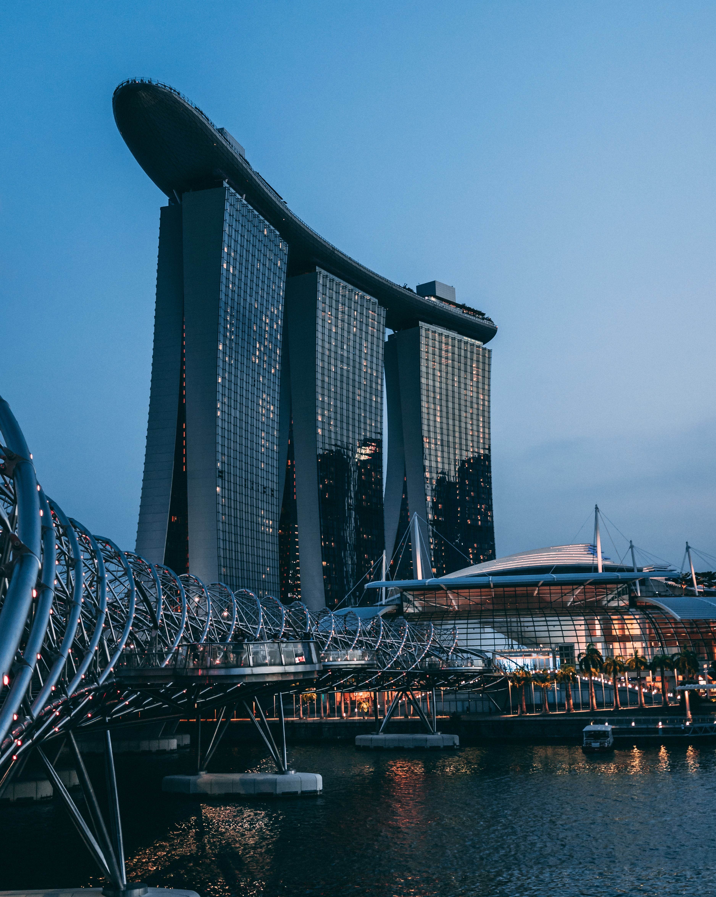
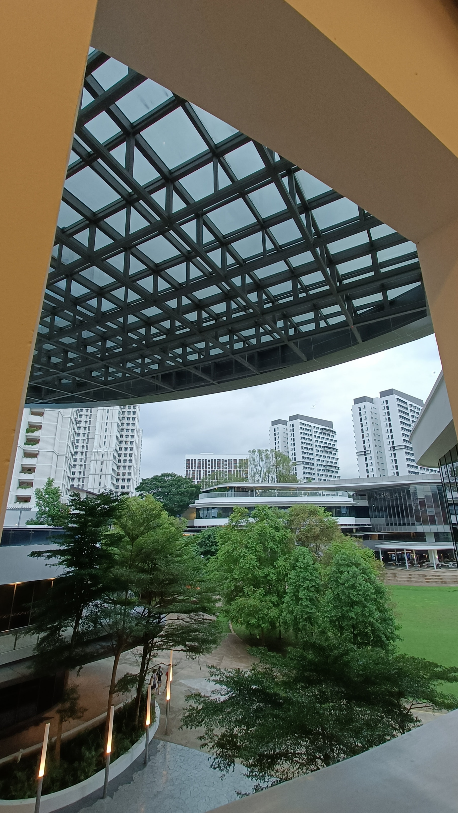

City view of Singapore shot at Marina Bay(cited from unsplash)The famous nature park Gardens by the bay(cited from unsplash)

The international Changi Airport with magnificent waterfall and tropical plants(cited from unsplash)

The view of Chinatown with various of chinese restaurants(cited from unsplash)The Joon Chiat Road with colorful houses alongside(cited from unsplash)

The Marina Bay Sands Hotel at night(cited from unsplash)

Campus of National University of Singapore(cited from unsplash)Traditional Singapore food chicken rice(cited from unsplash)